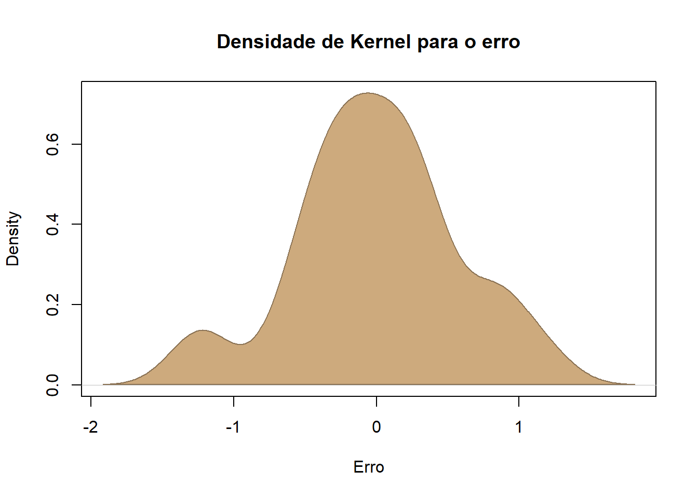

Vamos iniciar o estudo de modelos lineares começando pela Regresão Linear Simples (RLS). Mais específicamente, vamos estudar a RLS no contexto de dados de corte transversal. Tal abordagem, segmentada por tipos de dados, facilíta o entendimento das hipóteses do modelo.
Os conceitos estatísticos aplicados no estudo de RLS são os mesmos apresentados na seção anterior.
O matérial desta seção é baseado na 4ed do livro de Jeffrey Wooldridge, Introdução à Econometria: Uma Abordagem Moderna, de 2013. Embora o título do livro remeta à econometria, os modelos apresentados no livro são aplicaveis à diversas Ciências Sociais, tais como o Direito, Ciência Política, Sociologia, Psicologia Empírica etc…
A análise de Regressão é um instrumento poderoso para os centistas sociais. Podemos verificar como determinadas variáveis importantes nas ciencias sociais interagem com outras, as vezes em uma relação de causa e efeito.
Aqui também teremos que ter uma questão ou problema. Anteriormente gostariamos de entender o que estava acontecendo, qual a Renda pc das mulheres, qual a taxa de feminicídio… Agora queremos ir mais a fundo, porque determinados bairros tem mais crime do que outros? O que determina a renda pc de uma mulher?
7.1 Introdução
Começamos com o modelo mais geral da população:
\[y = \beta_0 + \beta_1x + u \]
Nesta equação, \(y\) é a variavel dependente ou também denominada de variável explicativa; \(x\) é a variável explicativa e \(u\) é o termo de erro. Essa equação é uma equação de regressão linear simples.
Vejamos um exemlo
Gostariamos de explicar a taxa de crimes nos bairros de uma cidade e consideramos que os níveis de desemprego nas localidades são importantes. Nosso modelo de regressão poderia ser específicado da seguinte maneira:
\[Crime_i = \beta_0 + \beta_1Desemprego_i + u\]
O subscrito \(i\) se refere a um bairro hipotético da cidade. Note que nesse caso,\(i\) é o subscrito que relaciona nossas unidades de observação (bairros). Nossas unidades de observação podem variar a depender do contexto em estudo: países, cidades, bairros, estados, pessoas, processos, varas, tribunais….
Note que, novamente o termo de erro, \(u\), está presente na equação. O termo de erro, não observado, capta tudo aquilo que afeta \(Crime\), mas que não estamos controlando, ou seja, que não é explicado pelo \(Desemprego\).
Voltemos a equação básica:
\[y = \beta_0 + \beta_1x + u \]
Na analise de RLS estamos interessados nos parâmetros \(\beta_0\) e sobretudo \(\beta_1\). A razão primordial para isso é que, tudo o mais constante, a relação acima aponta que
\[\Delta y = \beta_1 \Delta x \] , se \[\Delta u = 0\]
Isto é, se tudo o mais que afeta \(y\) permanecer inalterado, uma variáção em \(x\), \(\Delta x\), terá um impacto de \(\beta_1 \Delta x\) em \(y\). No exemplo da criminalidade, teremos que:
\[\Delta crime = \beta_1 \Delta desemprego \]
Assim, o aumento o de 1 ponto no desemprego irá ter o efeito de \(\beta_1\) unidades de crimes em média. Por isso, quando conseguimos estimar os parêmetros \(\beta\) estamos mais próximos de entender as relações entre \(x\) e \(y\) em nossas aplicações.
Cabe destacar algo bastante importante.As relações acima não encerram a questão da causalidade. Como podemos inferir um impacto causal do desemprego na criminalidade se estamos ignorando todos os demais fatores que ficaram de fora do modelo - fatores que são captados em \(u\) não observados.
7.1.1 Alguns Exemplos de Regressão Aplicados ao Contexto Jurídico:
Considere os seguintes exemplos de RLS aplicadas ao contexto do Direito
Previsão de Sentenças com Base na Gravidade do Crime: Onde, a variável dependente e tamanho da pena, e a variável independente é a Gravidade do Crime, \(\beta_0\)é o intercepto da regressão. \(\beta_1\) é o coeficiente de regressão que representa como a gravidade do crime influência o tamanho da pena, \(u\) é o termo de erro.
Análise de Fatores que Influenciam o Tempo de Julgamento: Variável Independente (\(x\)), Tipo de Processo (por exemplo, criminal, civil, administrativo). Variável Dependente (\(y\)), Tempo de Duração do Processo. Objetivo: Identificar se o tipo de processo tem impacto no tempo que um caso leva para ser concluído.
\[Tempo = \beta_0 + \beta_1 Processo + u\]
Previsão de Probabilidade de Recurso com Base em Decisões Anteriores: Variável Independente (\(x\)): Resultado da Decisão Anterior (por exemplo, deferimento ou negação do recurso). Variável Dependente (\(y\)): Probabilidade de Entrada com Recurso. Objetivo: Determinar a probabilidade de um recurso ser apresentado com base no resultado de decisões passadas.
\[Resultado = \beta_0 + \beta_1 Resultado_{-1} + u \]
Análise de Relação entre Número de Testemunhas e Veredito: Variável Independente (\(x\)): Número de Testemunhas. Variável Dependente (\(y\)): Veredito (por exemplo, culpado ou inocente). Objetivo: Investigar se o número de testemunhas influencia o veredito
\[ Veredito = \beta_0 + \beta_1 Testemunhas + u \]
7.2 Hipóteses sobre o comportamento do Termo de Erro
Se especificamos o modelo com \(\beta_0\), podemos assumir que \(u\), tem média igual a zero. Em notação de esperança matematica essa hipotese equivale a:
\[E(u) = 0\]
Podemos definir uma segunda hipotese sobre \(u\). Uma hipótese forte, é a de que \(u\) e \(x\) são independentes. Tal hípótese é a hipótese crucial do modelo de RLS:
\[E(u|x) = 0\]
Justas as hipóteses de \(E(u) = 0\) e \(E(u|x) = 0\) são denominadas de hipotese de média condicional zero.
Dessa forma, no nosso modelo inicial:
\[y = \beta_0 + \beta_1x + u\]
Aplicando o operador \(E( \cdot |x )\), obetmos
\[ E( y |x ) = \beta_0 + \beta_1x \]
Assim, na equação acima, temos um aumento de uma unidade em \(x\), implica em um aumento no valor esperado (ou em média) de \(y\) na magnitude de \(\beta_1\).
A equação acima, é caracterizada como função de regressão populacional. Essa função nos fornece a elação entre os diferentes níveis de\(x\) é o nível médio de \(y\), isto é \(E( y |x )\).
Função de Regressão Populacional, fonte: Anderson David R., Sweeney Dennis J., Williams Thomas A. (2019), Statistics for Business & Economics, Cengage Learning; 14th edition
Agora, podemos voltar a nossa equação base e verificarmos o progresso feito no entendimento do modelo:
\[y = \beta_0 + \beta_1x + u \]
\[y = E( y |x ) + u \]
Na equação acima, \(E( y |x )\) é chamada de parte sistematica de \(y\). Isto é, a parte sistematicamente explicada por \(x\). Já o termo de erro não observado, \(u\) é a parte não sistematica de \(y\), não explicada por \(x\).
7.3 Estimação dos Parâmetros da RLS
Não conhecemos \(\beta_0\) e \(\beta_1\) queremos estimadores desses parametros: \(\hat{\beta_0}\) e \(\hat{\beta_1}\).
Suponha que tenhamos uma amostra aleatória da população: \(\{(x_i, y_i): i = 1, ..., n\}\). Poderia ser uma amostra de crimes e taxa de desemprego por bairros.
Em nosso modelo base:
\[y_i = \beta_0 + \beta_1x_i + u_i \]
onde \(u_i\) é o erro aleatório da \(i\)-ésima observação.
Onde, \(\bar{x}\) e \(\bar{y}\) são as médias amostrais de \(x\) e \(y\) respectivamente.
Os estimadores \(\hat{\beta}_0\) e \(\hat{\beta}_1\) são chamados de estimadores de Mínimos Quadrados Ordinários (MQO).
A ideia é que os parâmetros que estimamos, \(\hat{\beta}_0\) e \(\hat{\beta}_1\), são os parâmetros que minimizam a soma dos quadrados das diferenças entre nossos \(y_i\) obversados e seus valores preditos definidos como
\[y_i- \hat{y}_i =y_i - \hat{\beta}_0 + \hat{\beta}_1x_i=u_i\] Queremos minimizar o quadrado dessa diferença. Vejamos graficamente:
Valores Ajustados e Resíduos de MQO
Antes de passarmos para o proxímo tópico de RLS, cabe mencionar uma nota sobre terminologia: quando estimamos equações de RLS do tipo \(y = \beta_0 + \beta_1 x + u\), dizemos que “rodamos a regressão de\(y\) sobre \(x\) !”
7.3.1 Teste de Hipótese sob um Único Parametro
Agora precisamos testar se nossa estimativa é estatisticamente igual a zero ou se ela é diferente de zero. Há evidências que a nossa variável \(X\) afeta a nossa variável \(Y\) na população? Na maior parte do tempo testamos hipóteses do tipo
\[H_0: {\beta_j}=0\] Na hipótese principal testamos a situação que \(X\) não afeta \(Y\). Na hipótese alternativa:
\[H_1: \beta_j \neq 0\]
Testamos a hipótese que \(X\) afeta \(Y\) nessa população. Graficamente temos a figura abaixo.
Teste de hipótese, Fonte:CUEMATH
Estatística de Teste:
Este é um valor calculado a partir dos dados da amostra que é usado para avaliar a probabilidade de observar tal valor se a hipótese nula fosse verdadeira. Ele que vai dizer se estamos na área amarela ou azul da figura acima.
7.3.1.1 Valor-p:
O valor-p é a probabilidade de observar uma estatística de teste tão extrema quanto, ou mais extrema do que, aquela calculada a partir dos dados da amostra, sob a suposição de que a hipótese nula seja verdadeira. Em outras palavras, mede quão provável é obter os resultados observados se a hipótese nula for correta.
Interpretação: Um valor-p pequeno (tipicamente menor que um nível de significância predefinido, comumente 0,05) sugere que os dados observados são improváveis de ter ocorrido se a hipótese nula fosse verdadeira. Portanto, fornece evidências contra a hipótese nula, e os pesquisadores podem rejeitar a hipótese nula em favor da hipótese alternativa. Por outro lado, um valor-p grande indica que os dados observados são consistentes com a hipótese nula, e há evidências insuficientes para rejeitá-la.
7.3.2 Aplicação - Estimando uma Regressão Linear Simples
Vamos utilizar aqui o nosso banco de dados anterior sobre feminicídio. É um banco com poucas obserações e possui fim didátco, apesar de serem dados reais.
Uma questão incial é entender quem será \(Y\) e quem será \(X\). Estamos querendo entender a taxa de feminicídio. A questão é, quais são seus determinantes? Aqui precisamos de alguma teoria…mas or hora, vamos ter como hipótese inicial que quanto maior a taxa de homícídio espera-se que em média a taxa de feminicídio aumente. :
Apesar de parecer “muito complicado” na teoria, na prática o r estima uma RLS em segundos. A função para estimar é alm, ou linear model.
### Aplicação da RLS - Método dos Mínimos Quadrados Ordinários#carregando o pacote para ler arquivos em excelload("C:/Users/Alexandre_Nicolella/Aulas/FEA-RP/Jurimetria/jurimetria/final_fem_22.Rdata")#Vamos chamar a partir de agora nosso banco de dadosdados<- final_fem_22 ##Função para rodar a regressãomodelo <-lm(data = dados, feminic_tx ~ homic_tx)#Essa função resume a regressão, ja testar a hipótese sobre o coeficiente e da outras estatisticas que abordaremos a seguir.summary(modelo)
Call:
lm(formula = feminic_tx ~ homic_tx, data = dados)
Residuals:
Min 1Q Median 3Q Max
-1.28942 -0.30169 0.03482 0.30070 1.18192
Coefficients:
Estimate Std. Error t value Pr(>|t|)
(Intercept) 1.14673 0.28607 4.009 0.000485 ***
homic_tx 0.10580 0.05503 1.923 0.065990 .
---
Signif. codes: 0 '***' 0.001 '**' 0.01 '*' 0.05 '.' 0.1 ' ' 1
Residual standard error: 0.5882 on 25 degrees of freedom
Multiple R-squared: 0.1288, Adjusted R-squared: 0.09397
F-statistic: 3.697 on 1 and 25 DF, p-value: 0.06599
7.3.2.1 Entendendo os Resultados
1. Resíduos Residuals: apresenta a distribuição dos resíduos, observa-se que amediana dos resíduos está próxima a zero.
2.Coeficientes Em seguida, abaixo de Coefficients temos 5 colunas.
Coluna 1: Nome da variável
Coluna 2: Coeficiente estimado \(\hat{\beta_0}\) o intercepto e \(\hat{\beta_1}\) do termo da variável homicídio
Coluna 3: É o desvio padrão da estimativas de \(\beta\)
Coluna 4: É a estatistica t utilizada para fazer o teste de hipótese e neste caso, tem-se: \[H_0:\beta_0=0\] e \[H_0:\beta_1=0\]
Coluna 5: É o p-valor, a probabilidade de encontrarmos valores mais extremos da estatística t. Os asteriscos indicam *** signicante a 0,1% ** a 1% * a 5% e \(.\) a 10%.
Interpretando o Coeficiente
O coeficiente do intercepto nos diz que quando a taxa de homicídio for 0, ainda existira uma taxa de feminicídio de 1,4 pontos, \(\beta_0\), significante a 0,1%. E cada 1 ponto de aumento na taxa de homicídio, aumenta em 0,10 \(\beta_1\) pontos a taxa de feminicídio, significante a 10%.
3. \(R^2\): Em seguida temos o \(R^2\) e \(R^2\) ajustado. Essas estatísticas calculam quanto da variância da taxa de feminicídio pode ser explicada pela variância da taxa de homicídio. Quando estão próximos a 1 explicam muito, quanto estão próximos a 0 explicam pouco. No caso o nosso \(R^2\) ficou baixo e portanto boa parte da variabilidade do feminicídio, não foi explicada pela taxa de homicídio.
4. Estaística F: E por fim a estatística F mostra o grau de ajustamento do modelo. Se ela for significativa diz que o modelo é bem ajustados aos dados. As variáveis explicativas incluídas são importantes para a explicação da taxa de feminicídio.Essa estatistica testa a seguinte hipótese.
\[H_0:\beta_1=...=\beta_k=0\] contra
\[H_1: H_0\text{ é falsa}\]
VISUALMENTE
Abaixo tem-se os dados utilizados e a nossa reta de regressão estimada acima. Veja como ela se ajusta a nuve de pontos.
# Ajustando a reta de regessão.plot(dados$homic_tx, dados$feminic_tx,main ="Taxa de Feminicídio vs.Tx de homicidio",xlab ="Taxa de Homicidio",ylab ="Taxa de Feminicídio",col ="steelblue", # Cor dos pontospch =16, # Forma dos pontos (círculos sólidos)cex =1.0, # Tamanho dos pontosabline(modelo, col ="lightsalmon3", lwd =3))
7.4 Caracteristicas do Método dos Mínimos Quadrados Ordinários em Determinadas Amostras de Dados
7.4.1 Valores estimados e Resíduos
Uma vez estimados \(\hat{\beta}_0\) e \(\hat{\beta}_1\) temos os valores ajustados ou também denominados de valores preditos ou fitted values.
Para uma observação qualquer \(i\), seu valor estimado é:
\[\hat{y}_i= \hat{\beta}_0 + \hat{\beta}_1x_i\]
Todos os valores \(\hat{y}\) estarão sobre a reta de regressão.
O resíduo, tal qual definido anteriormente, será a diferença entre o valor ajustado \(\hat{y}\) e o verdadeiro \(y\) em nosso banco de dados:
\[\hat{u}_i = y_i - \hat{y}_i\]
Se \(\hat{u_i} > 0\) a regressaõ subestima \(y_i\). Se \(\hat{u_i} < 0\) a reta superestima \(y_i\). O cenário ideal é quando \(\hat{u}_i= 0\), algo que quase nunca acontece.
##Obtendo os residuos da regressãoresid <-residuals(modelo) k <-density(resid)plot(k, xlab="Erro",main="Densidade de Kernel para o erro")polygon(k, col="burlywood3", border="burlywood4")

7.4.2 Propriedades Algébricas do MQO
A Soma dos Resíduos é zero:
\[\sum_{i=1}^{n} \hat{u}_i = 0\]
###Soma dos resíduossum(resid)
[1] 8.881784e-16
#note que é um número praticamente igual a zero
A covariancia amostral entre a variavel explicativa e os resíduos é zero:
\[\sum_{i=1}^{n} x_i \hat{u}_i = 0\]
#obtendo a variável xx <- dados$homic_tx#somando com os residuossum(x*resid)
[1] 1.298961e-14
O ponto \((\bar{x},\bar{y})\) sempre estará sob a reta de regressão.
A média dos valores estimados, \(\bar{\hat{y}}\) é igual a média dos valores observados \(\bar{y}\).
Note que as estimatvas de MQO decompõe \(y\) em 2 partes: 1) os valores ajustados \(\hat{y}\) e os resíduos \(\hat{u}\).
Os valores de \(\hat{y}\) e \(\hat{u}\) são não correlacionados na amostra!
7.4.3 Qualidade do Ajuste
Nesta seção vamos responder a seguinte questão: “Quão bem\(x\) explica \(y\) ?”
Considere as seguintes definições
Soma dos Quadrado Totais (SQT):
\[\text{SQT} = \sum_{i=1}^{n} (y_i - \bar{y})^2\]
# Calcular a média da variável dependente (feminic_tx)media_feminic_tx <-mean(dados$feminic_tx)# Calcular a Soma dos Quadrados Totais (SQT)sqt <-sum((dados$feminic_tx - media_feminic_tx)^2)sqt
#r-quadrado do modelor_quadrado <-1- (sqr/sqt)r_quadrado
[1] 0.1288141
Novamente, o \(R^2\) é a porcentagem da variação de y que é explicada por \(x\). O valor de \(R^2\) sempre estará na RLS entre \(0\) e \(1\).
7.5 Unidade de Medida e Forma Funcional
7.5.1 Unidade de Medida
Vejamos o efeito de unidade de medidas na nossa regressão.
Se a variável dependente (\(Y\)) é multiplicada por uma constante \(c\), então as estimativas do intercepto e da inclinação também serão multiplicadas por \(c\). Vamos multiplicar por 10 e ver o que acontece:
library(dplyr)
Anexando pacote: 'dplyr'
Os seguintes objetos são mascarados por 'package:stats':
filter, lag
Os seguintes objetos são mascarados por 'package:base':
intersect, setdiff, setequal, union
dados <- dados |>mutate(feminic_tx10 =feminic_tx*10 )modelo1 <-lm(data = dados, feminic_tx10 ~ homic_tx)summary(modelo)$coefficients
Estimate Std. Error t value Pr(>|t|)
(Intercept) 1.146731 0.28607061 4.008560 0.0004846694
homic_tx 0.105805 0.05503129 1.922633 0.0659903845
summary(modelo1)$coefficients
Estimate Std. Error t value Pr(>|t|)
(Intercept) 11.46731 2.8607061 4.008560 0.0004846694
homic_tx 1.05805 0.5503129 1.922633 0.0659903845
Se a variável explicativa (\(X\)) é multiplicada por uma contante \(c\), então o coeficiente de inclinação será dívido por \(c\). Nada acontece com o intercepto. Vamos multiplicar agora a taxa de homicídio por 10
dados <- dados |>mutate(homic_tx10 =homic_tx*10 )modelo2 <-lm(data = dados, feminic_tx ~ homic_tx10)summary(modelo)$coefficients
Estimate Std. Error t value Pr(>|t|)
(Intercept) 1.146731 0.28607061 4.008560 0.0004846694
homic_tx 0.105805 0.05503129 1.922633 0.0659903845
summary(modelo2)$coefficients
Estimate Std. Error t value Pr(>|t|)
(Intercept) 1.1467311 0.286070605 4.008560 0.0004846694
homic_tx10 0.0105805 0.005503129 1.922633 0.0659903845
Se a variável explicativa (\(X\)) é dividida por uma constante \(c\), então o coeficiente de inclinação é multiplicado por \(c\). Nada acontece com a constante.
dados <- dados |>mutate(homic_tx_10 =homic_tx/10 )modelo3 <-lm(data = dados, feminic_tx ~ homic_tx_10)summary(modelo)$coefficients
Estimate Std. Error t value Pr(>|t|)
(Intercept) 1.146731 0.28607061 4.008560 0.0004846694
homic_tx 0.105805 0.05503129 1.922633 0.0659903845
summary(modelo3)$coefficients
Estimate Std. Error t value Pr(>|t|)
(Intercept) 1.146731 0.2860706 4.008560 0.0004846694
homic_tx_10 1.058050 0.5503129 1.922633 0.0659903845
Importante
O \(R^2\) e os testes de hipótese não depende das unidades de nossas variáveis.
7.6 Incorporando não linearidades (nas variáveis!)
Vamos agora incorporar a não linearidade nas variáveis e ver como fica a sua interpretação. Aabaixo tem-se uma tabela para interpretar os coeficientes e será explicada nos exemplos abaxo.
Modelo
Dependente
Explicativa
Interpretação de \(\beta_1\)
Nivel-nível
\(y\)
\(x\)
\(\beta_1 \Delta x\)
Nível-Log
\(y\)
\(ln(x)\)
\((\beta_1/100)\%\)\(\Delta x\)
Log-Nível
\(ln(y)\)
\(x\)
\(\% \Delta y = (100 \beta_1) \Delta x\)
Log_log
\(ln(y)\)
\(ln(x)\)
\(\% \Delta y = \beta_1\% \Delta x\)
7.6.1 Modelo Nível-Nível
Esse é o modelo que fizemos anteriormente e nos diz que uma variação absoluta em \(X\) terá um efeito de \(\beta\) em Y.
Estimate Std. Error t value Pr(>|t|)
(Intercept) 0.0009590929 0.284865 0.003366832 0.9973404
dados$Lnhomic_tx 0.2915325798 0.185564 1.571062163 0.1287399
Um aumento de 1% percentual nos homicídios aumenta em 0,29% a taxa de feminicídio nos estados brasileiros.
7.7 Regressão Linear Múltipla (RLM)
A RLM é uma extensão natural da RLS. Entretanto, ao invés de termos apenas uma variável explicativa podemos ter \(k\) variáveis dependentes
\[y = \beta_0 + \beta_1 x_1 + \beta_2 x_2 + \beta_3 x_3 + \ldots + \beta_k x_k + u\] A hípótese fundamental é a de que:
\[E(u|x_1, . . . ,x_k) = 0\]
Problemas que façam com que um dos \(x_1, ...., x_k\) ser correlacionado com \(u\), invalida a hipótese acima. Tal hipótese implica em não viés do MQO.
7.7.1 Exemplos de Regressão Multipla no Contexto Jurídico
Determinação de Fatores que Afetam o Valor de Indenizações:
Variáveis Independentes: Idade da Vítima, Gravidade do Dano, Jurisdição. Variável Dependente: Valor da Indenização.Objetivo: Analisar como a idade da vítima, a gravidade do dano e a jurisdição influenciam o valor das indenizações concedidas
Análise de Variáveis que Influenciam Taxas de Condenação em Casos Criminais:
Variáveis Independentes: Idade do Réu, Tipo de Crime, Local do Julgamento. Variável Dependente: Taxa de Condenação.Objetivo: Investigar como a idade do réu, o tipo de crime e o local do julgamento afetam a probabilidade de condenação.
Análise de Fatores que Influenciam a Taxa de Feminicídio:
Variáveis Independentes (X): Taxa de Desemprego, Índice de Educação, Presença de Políticas de Proteção à Mulher. Variável Dependente (Y): Taxa de Feminicídio por 100.000 mulheres. Objetivo: Investigar como o desemprego, o nível de educação e a existência de políticas de proteção à mulher estão relacionados à taxa de feminicídio em diferentes regiões.
\[Tx.feminicidio = \beta_0 + \beta_1 desemprego + \beta_2 educ + \beta_3 política + u \]
7.7.2 A Interpretação da Equação de Regressão de MQO
O coefiente \(\beta_j\), com \(j=1,...k\), mede o efeito do incremento de uma unidade de \(x_j\) em \(y\). Isso continua com a mesma interpretação para modelos que usam o log.
Suponha que estejamos interessados no impacto de \(x_1\). Podemos fazer o seguinte exercício: Tudo o mais constante qual o impacto de \(x_1\) em \(y\):
\[\frac{\Delta y}{\Delta x} = \beta_1 \]
Manter outros fatores fixos permite o cientista social, “mimetizar” um experimento, tal qual nas Ciências Naturais. Obviamente, isso não é tão simples assim. Entretanto, manter outros fatores fixos, e supondo que \[E(u|x_1, . . . ,x_k) = 0\] , nos aproxíma de afirmações de cunho causal.
7.8 Estimação dos k parametros na RLM
7.8.1 Estimadores de MQO
A mecânica para conseguirmos estimativas de \(\beta_j\), fica uma pouco mais complicada. Felizmente, os softwares, tais como o R, fornecem essas estimativas com muita facilidade. Não obstante, convêm apresentar uma abordagem para o calculo desses parâmetros. Utilizaremos álgebra de matrizes para mostrar um “algoritmo” para calcular esses \(\beta_j\). Em verdade, esse é o algoritmo utilizado pela função lm() do R no computo dos estimadores.
Onde \(\mathbf{X}^T\) é a matriz transposta de \(\mathbf{X}\), e \((\mathbf{X}^T \mathbf{X})^{-1}\) é a matriz inversa da seguinte multiplicação de matrizes, \((\mathbf{X}^T \mathbf{X})\)
Esse vetor de estimativas irá nos fornecer os valores para os \(\beta_j\),com \(j=1,...,k\).
7.8.2 Estimativas de MQO
Vamos analisar o efeito da taxa de homicídio e da renda per capita sobre a taxa de feminicídio. Ou seja:
### Estimando uma regressão Linear Multiplarlm <-lm(data = dados, feminic_tx ~ homic_tx + rendapc)summary(rlm)
Call:
lm(formula = feminic_tx ~ homic_tx + rendapc, data = dados)
Residuals:
Min 1Q Median 3Q Max
-1.32561 -0.31655 -0.00645 0.31188 1.11840
Coefficients:
Estimate Std. Error t value Pr(>|t|)
(Intercept) 0.8852186 0.5368738 1.649 0.112
homic_tx 0.1167346 0.0588882 1.982 0.059 .
rendapc 0.0001447 0.0002499 0.579 0.568
---
Signif. codes: 0 '***' 0.001 '**' 0.01 '*' 0.05 '.' 0.1 ' ' 1
Residual standard error: 0.5962 on 24 degrees of freedom
Multiple R-squared: 0.1408, Adjusted R-squared: 0.06921
F-statistic: 1.967 on 2 and 24 DF, p-value: 0.1618
A leitura dos resultados é análoga ao que já fizemos anteriormente. O aumento de uma unidade na taxa de homicídio aumenta em 0,11 a taxa de feminicídio e é significante a 10%. Entretanto, não há evidências de que a renda pc tem efeito sobre a taxa de feminicídio. Assim, estados mais violentos tendem a ter mais feminicídios. Entretanto, estados mais pobres e mais ricos possuem taxas similares de feminicídio.
7.8.3 Qualidade do Ajuste na Regressão Linear Multipla
Um fato importante sobre \(R^2\) é que ele nunca diminui ao incluirmos variáveis no modelo. Isso decorre de propriedades algébricas desse indicador. Em nosso exemplo:
Modelo somente com Homicídio: \(R^2=0,12\)
Modelo com Homicídio e Renda: \(R^2=0,14\)
Veja que o \(R^2\) aumentou ao incluir a renda pc.
Por isso, os softwares geralmente reportam uma outra estatística de ajuste o R-quadrado ajustado,\(\bar{R}^2\):
O \(\bar{R}^2\), tal como expresso acima conta com a presença do \(R^2\) original, mas note que, no denominador estamos dividindo por \(n-k-1\), onde \(n\) é o tamanho da amostra em mãos, e \(k-1\) se referem ao fato de termos \(k\) variáveis explicativas e uma constante. Portanto, o \(\bar{R}^2\), impões uma penalidade à inclusão de variáveis independentes em um modelo de regressão.No nosso modelo:
Modelo somente com Homicídio: \(R^2=0,12\) e \(R^2_{ajust}= 0,094\)
Modelo com Homicídio e Renda: \(R^2=0,14\) e \(R^2_{ajust}= 0,069\)
Podemos notar que a inclusão da renda pc contribui muito pouco para a explicação do modelo mas mas prejudicou as estimativas (menor grau de liberdade. dessa forma observa-se que o \(R^2_{ajust}\) ficou menor.
Não obstante, cabe destacar que um \(R^2\) baixo não é uma evidencia definitiva contra nosso modelo. Em ciências sociais é comum verificarmos \(R^2\) relatvamente pequenos. Isso significa que, embora coletivamente as variáveis explicativas não expliquem muito das variações de \(y\), é possível que as estimativas de MQO sejam efeitos parciais confiáveis- tudo o mais constante - de cada \(x_j\) sobre \(y\).
7.8.4 Uso de Variáveis Qualitativas na Análise de RLM
O uso de variáveis binárias é a alternativa para utilizarmos variáveis qualitativas (discretas ou categóricas) no modelo de regressão. Dessa forma, variáveis que possuem categorias (homem/mulher; regiões, típo de homicídio). Considere os exemplos mencionados anteriormente.
Determinação de Fatores que Afetam o Valor de Indenizações:
Variáveis Independentes: Idade da Vítima, Gravidade do Dano, Jurisdição.
Variável Dependente: Valor da Indenização.
Objetivo: Analisar como a idade da vítima, a gravidade do dano e a jurisdição influenciam o valor das indenizações concedidas
Análise de Fatores que Influenciam a Taxa de Feminicídio:
Variáveis Independentes\((X)\): Taxa de Desemprego, Índice de Educação, Presença de Políticas de Proteção à Mulher.
Variável Dependente\((Y)\): Taxa de Feminicídio por 100.000 mulheres.
Objetivo: Investigar como o desemprego, o nível de educação e a existência de políticas de proteção à mulher estão relacionados à taxa de feminicídio em diferentes regiões.
\[Tx.feminicidio = \beta_0 + \beta_1 desemprego + \beta_2 educ + \beta_3 política + u \]
Em todos esses exemplos temos o que denominamos de variáveis qualitativas. No primeiro exemplo, gravidade e jurisdição não são quantificaveis. No segundo exemplo, o tipo de crime, e a localidade. Por fim, no último exemplo, a variável que indica ou não a presença de uma política pública de proteção a mulher também é qualitativa.
Felizmente, isso não traz problemas adcionais a estimação de MQO. Pelo menos quando tais variáveis aparecem como variáveis explicativas. Mais a frente veremos o que acontece quando a variável dependente é do tipo qualitativa.
Duas coisas mudam quando temos as variáveis qualitativas como regressores. Em primeiro lugar temos que organizar essas informações no banco de dados de modo coerente. Em segundo lugar, a introdução de variáveis qualitativas muda a interpretação dos resultados.
Fatores qualitativos geralmente aparecem na forma de informações binárias, também denominadas,dummy.
Variável Binária ou Dummy:
É uma variável que assume o valor 1 se a “condição occorre” e 0 caso o contrário.
Exemplos:
O crime de feminicídio ocorreu na região central?
se sim, ela recebe o valor 1,
se não ocorreu a variável recebe o valor 0.
Nesse caso teremos uma coluna em nosso banco de dados denominada centro, nas quais a linha recebe o valor 1 caso o crime tenha ocorrido no centro e 0 caso o contrário.
O crime foi considerado grave?
Se sim, recebe o valor 1,
caso contráriorecebe o valor 0.
Outras binárias….
1 se mulher e 0 se for homem.
1 se for autodeclarado não-branco e 0 se for branco
1 se trabalha e 0 se não trabalha
1 se feminicídio e 0 se não for feminicídio.
Utilizar 1 ou 0 é, de fato, um criterio arbitrario, mas essa escolha reside justamente na vantagem de se capturar informações importantes que tornam a interpretação dos resultados mais simples.
As observações que tiveram 1 como valor serão comparadas com aquelas observações que ficaram com o valor 0. Essas observações seriam nosso “grupo de comparação/grupo base”.
7.8.4.1 Uma única Variável Dummy Independente
A forma mais simples de incorporar uma variável qualitativa e simplismente adcionarmos ela na equação de regressão.
Considere o exemplo prático retirado do livro do Wooldridge. Queremos relacionar anos de estudo e salários. Obviamente, o exemplo é bastante simples, mas será útil para avaliarmos a questão.
\[salarioh = \beta_0 + \delta_0 feminino + \beta_1 educ + \beta_3 exper + \beta_4perm + u \] Nesse exemplo, estamos tentando entender os determinantes do salário. O salário pode ser explicado pela educação, experência, tempo no cargo e pelo fato de ser mulher. A variável feminino assume o valor 1, se o individuo for do sexo feminino e 0, caso o contrário. Na equação \(\delta_0\) mede a diferença no salário entre homems e mulheres, dado os mesmos anos de estudos, experiência e tempo no cargo, e evidentemente o mesmo \(u\).
Call:
lm(formula = wage ~ female + educ + exper + tenure, data = wage1)
Residuals:
Min 1Q Median 3Q Max
-7.7675 -1.8080 -0.4229 1.0467 14.0075
Coefficients:
Estimate Std. Error t value Pr(>|t|)
(Intercept) -1.56794 0.72455 -2.164 0.0309 *
female -1.81085 0.26483 -6.838 2.26e-11 ***
educ 0.57150 0.04934 11.584 < 2e-16 ***
exper 0.02540 0.01157 2.195 0.0286 *
tenure 0.14101 0.02116 6.663 6.83e-11 ***
---
Signif. codes: 0 '***' 0.001 '**' 0.01 '*' 0.05 '.' 0.1 ' ' 1
Residual standard error: 2.958 on 521 degrees of freedom
Multiple R-squared: 0.3635, Adjusted R-squared: 0.3587
F-statistic: 74.4 on 4 and 521 DF, p-value: < 2.2e-16
O coeficiente estimado para a binária que identifica mulheres foi de -1,81 e significativa a 1%. Isso indica que em média, uma mulher ganha menos US$ 1,81 por hora do que um homem com a mesma educação, experiência e tempo no cargo. Veja a figura abaixo ela mostra o efeito da binária feminina. Note que para um mesmo níve de escolaridade e o salário do homem é maior do que o salário da mulher. A dummy “desloca” o intercepto
Podemos utilizar a binária para ver o efeito da experiência para homens e para mulheres. Podemos fazer isso criando uma variável que é a multiplicação entre experiência e feminino. Vejamos:
Nesse novo modelo temos agora a binária de mulher, female, que mostra que o fato de ser mulher diminui o salário em -US$0,88. Veja que a média de salário é de US$ 5,9. A queda representa 15% a menos em relação ao homem.
Com relação a multiplicação pela experiência, podemos assim analisar. Como a variável é 0 para homem, o efeito da experiência para os homens é o próprio coeficiente, exper. Para cada ano a mais de experiência o salário do homem aumenta em US$ 0,057. Para as mulheres é a soma do coeficiente, exper + exp_f. Para cada ao a mais da experência da mulher o mercado paga US$0,001 . Isso está representado no gráfico abaixo.
Variáveis binárias multiplicativas graficamente, fonte: University of Washington
7.8.5 O uso de Dummies para categorias multiplas e Interação entre a dummy e a variável dependente
Considere a equação abaixo
\[log(salarioh) = \beta_0 + \beta_1 hsolteiro + \beta_2 mcasadas + \beta_3 msolteiras + \beta_4educ + \beta_5exper + \beta_6exper^2 + u\] Note que, definimos uma dummy para cada grupo e o o grupo de comparação é o conunto de homens solteiros.As estimativas das dummies acima irão captar a diferença proporcional nos salarios-horas relativamente aos homens solteiros.
Como temos um modelos log-nível, a interpretação é dada por \(\% \Delta y = (100 \beta_1) \Delta x\). Com base nas estimativas, verificamos que com relação aos homens casados:
Homens solteiros recebem cerca de 22% a menos.
Mulheres solteiras recebem 32,6% a menos.
Mulheres csadas recebem 41,5% a menos.
Mantendo fixas educaçao, experiência e tempo no emprego.
Variáveis ao Quadrado: interpretando
Note que temos uma nova variável a experência ao quadrado. A variável ao quadrado tenta capturar a seguinte ideia: se cada ano a mais de experiência sempre gera a mesmo incremento de salário, ou se o indivíduo recebe cada vez menos por cada ano a mais de experiência. Temos agora uma mudança de interpretação
\[\frac{\% \Delta y }{\Delta x}= 100\beta_5 +200\beta_6exper \]
\[\frac{\% \Delta y }{\Delta x}= 2,97 -0,118 \times exper \] Vamos pensar em uma pessoa que tem 0 anos de experiência e adquire um ano. Logo:
\[\frac{\% \Delta y }{1}= 2,97 -0,118 \times 1 = 2,85\% \] Ela ira receber 2,85% a mais de salário devido a essa experiência adquirida. Vejamos agora uma pessoa com 9 anos e adquire mais um ano, vai para 10. Logo
\[\frac{\% \Delta y }{1}= 2,97 -0,118 \times 10 = 1,79\% \] Esse ano a mais agora adicionou apenas 1,79% no seu salário. Para finalizar vejamos de 24 para 25 anos de experiência
\[\frac{\% \Delta y }{1}= 2,97 -0,118 \times 25 = 0,02\% \] Adiciona praticamente zero. E a partir desse ponto a adição será negativa, mais experiência terá menor salário. Assim
\[ 2,97 -0,118 \times exper = 0 \implies exper=\frac{2,97}{0,118}=25,16 \] O salário vai aumentando até chegar a experiência de 25 anos, depois desse ponto o mercado tende a penalizar com salários enores quem tem mais experiência.
7.8.6 Incorporando Informações Ordinais com o uso de Variáveis Dummy.
Vamos agora entender a criação de binárias para variáveis com várias categorias. Uma variável com categoria tradicional é a região onde mora o indivíduo. Podemos ver isso no nosso banco anterior chamado dados:
table(dados$regiao)
CO N NE S SD
4 7 9 3 4
Nesse caso eu teria que escolher uma região de comparação, por exemplo Sudeste e criar uma binária para o CO, uma para o N, uma para o NE e uma para o S. Veja o exemplo abaixo.
### criando as variáveislibrary("dplyr")dados <- dados %>%mutate(CO =ifelse(regiao=="CO", 1, 0))dados <- dados %>%mutate(NE =ifelse(regiao=="NE", 1, 0))dados <- dados %>%mutate(N =ifelse(regiao=="N", 1, 0))dados <- dados %>%mutate(S =ifelse(regiao=="S", 1, 0))
Como esse banco é pequeno, vamos retomar o banco o Wooldridge wage1. Neste banco já está criada a variável de região sendo a região leste a de comparação. Vamos adicionar então a região, sul, norte e oeste.
Call:
lm(formula = log(wage) ~ northcen + west + south + female + educ +
exper + tenure, data = wage1)
Residuals:
Min 1Q Median 3Q Max
-2.01490 -0.25600 -0.02259 0.25361 1.30569
Coefficients:
Estimate Std. Error t value Pr(>|t|)
(Intercept) 0.534853 0.108019 4.951 9.98e-07 ***
northcen -0.064811 0.052512 -1.234 0.21768
west 0.078528 0.058211 1.349 0.17792
south -0.061050 0.049041 -1.245 0.21374
female -0.306808 0.037148 -8.259 1.23e-15 ***
educ 0.086823 0.006943 12.504 < 2e-16 ***
exper 0.004808 0.001622 2.963 0.00318 **
tenure 0.017148 0.002968 5.777 1.31e-08 ***
---
Signif. codes: 0 '***' 0.001 '**' 0.01 '*' 0.05 '.' 0.1 ' ' 1
Residual standard error: 0.4137 on 518 degrees of freedom
Multiple R-squared: 0.4022, Adjusted R-squared: 0.3941
F-statistic: 49.79 on 7 and 518 DF, p-value: < 2.2e-16
Observa-se no modelo acima que não diferenças regionais importantes nos salários, quando controlamos para mulheres, educação, experiência e tempo no trabalho.